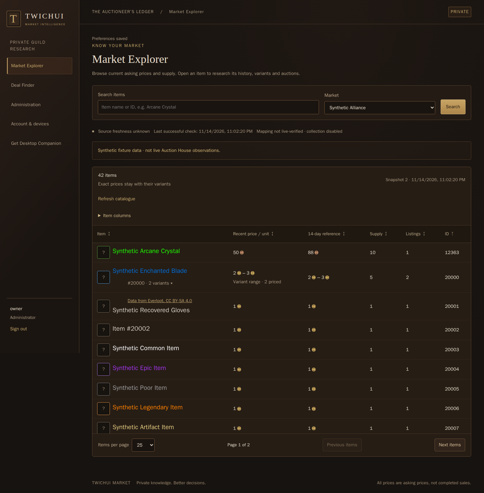
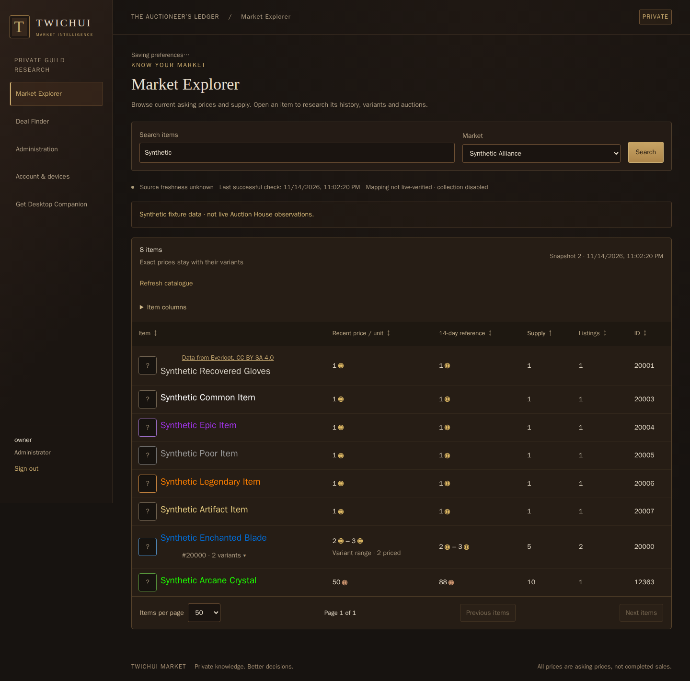
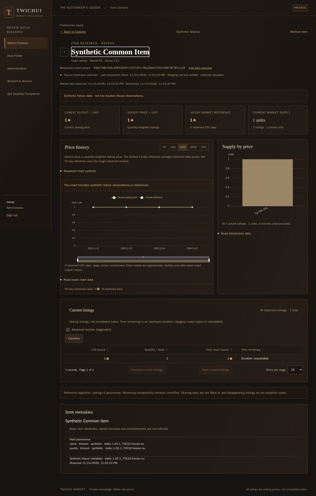
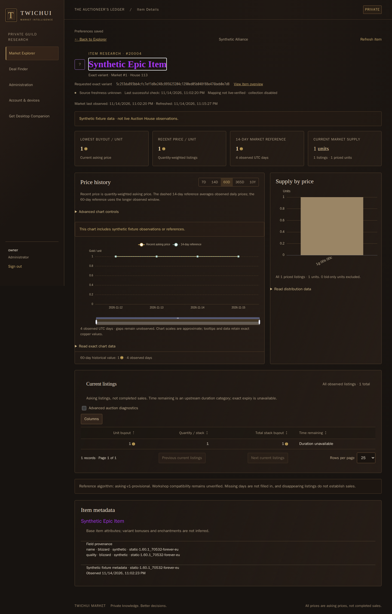
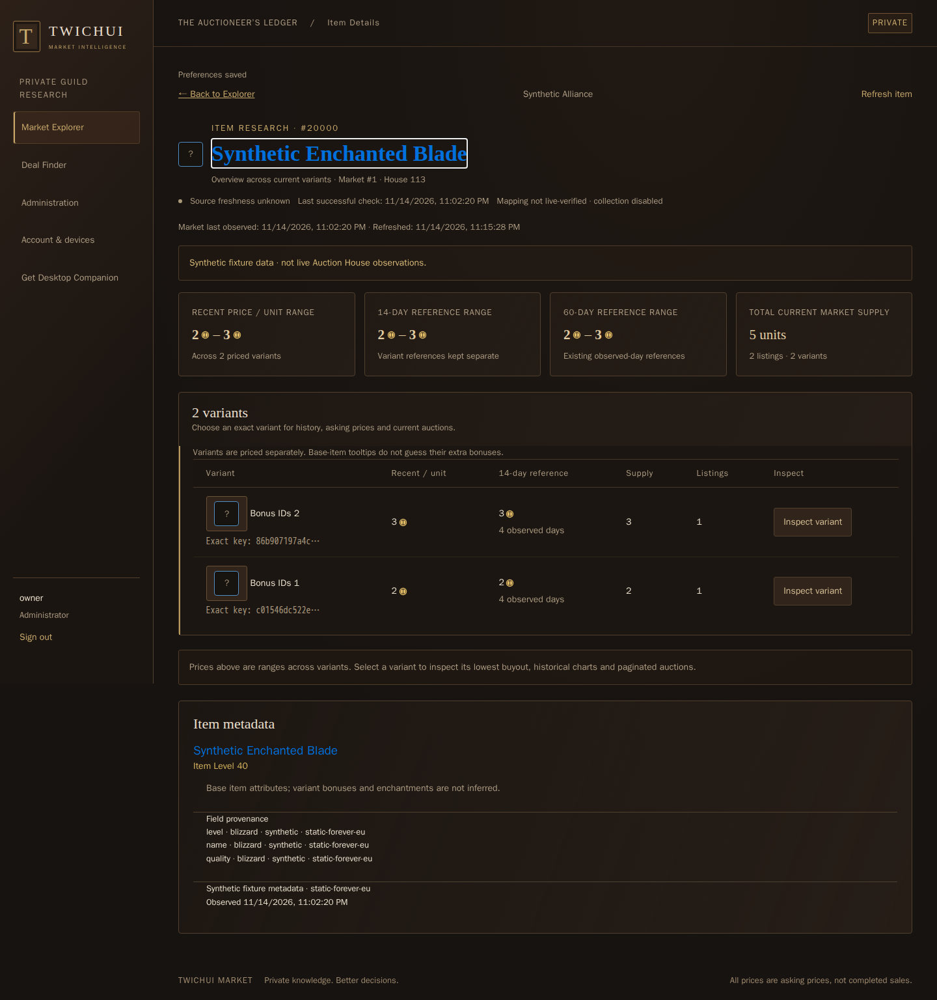
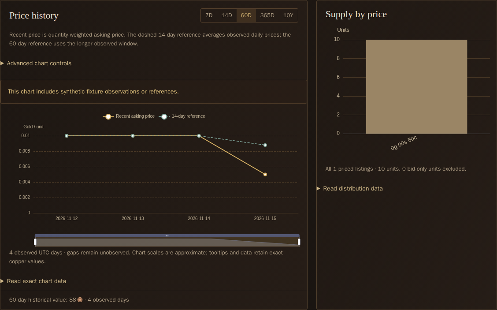
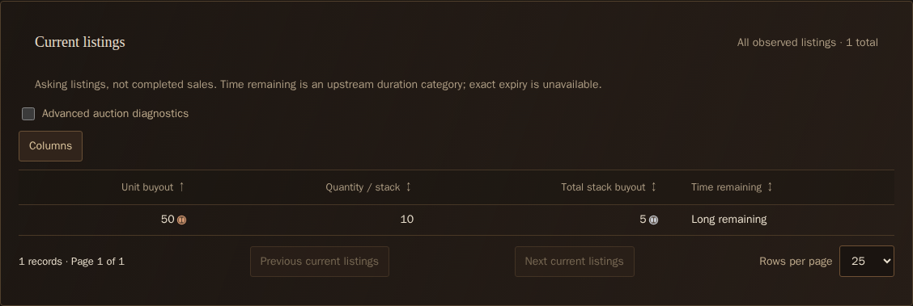
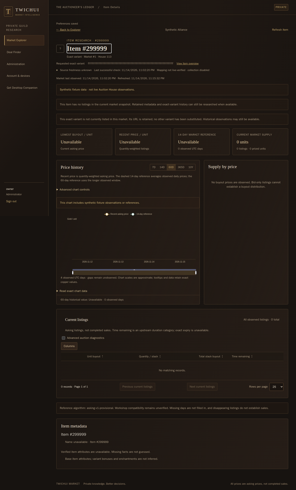
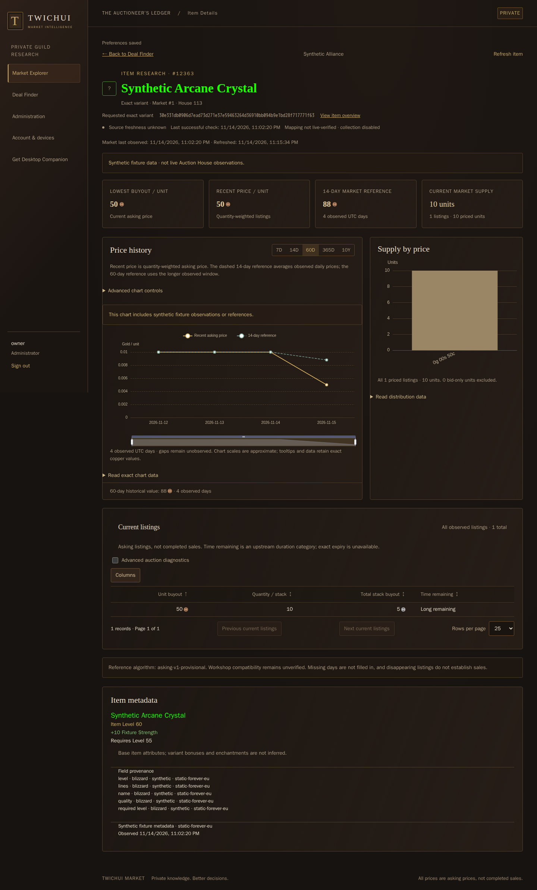
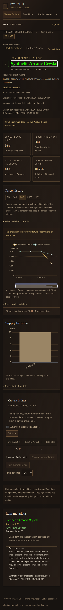

Undeployed review candidate. Actual browser captures from isolated synthetic acceptance data, never live market observations. Source b3e48bd; pinned preview image only. Click any capture for full resolution. Production remains on the approved administration release e9c4d29. Final owner visual approval is required before promotion.
Implementation, exact CI, accessibility, performance, limitations and promotion requirements










Additional evidence: Originating Deal Finder filters · Rare exact variant. Unknown artwork retains the existing placeholder; no game icons or item facts were invented for these fixtures.